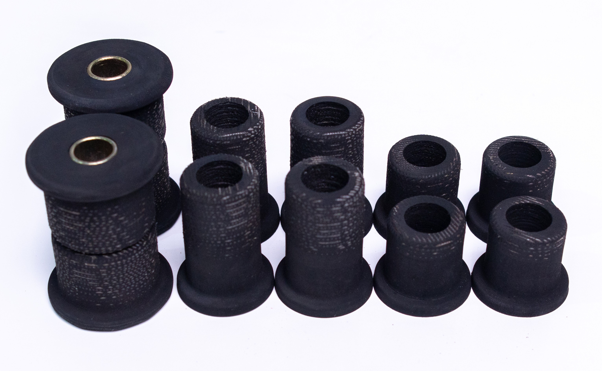

HILUX.CADA PEÇA CONTA.
Buchas do feixe de mola traseiro
Fotografia real do produto

Detalhe ampliadoKIT10062
Conheça a peça.
Confira a aplicação.
IdentificaçãoKIT10062
Antes do pedidoConfirme ano e versão.